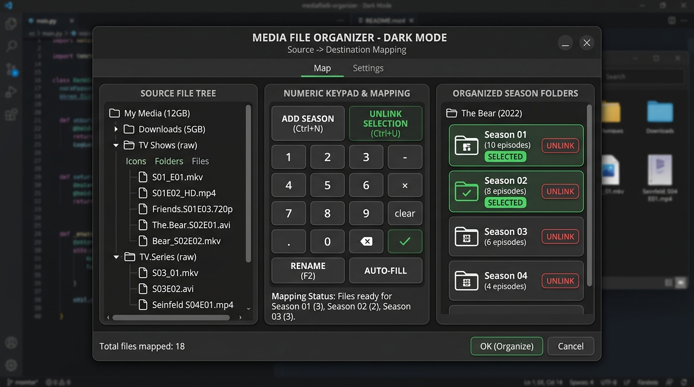
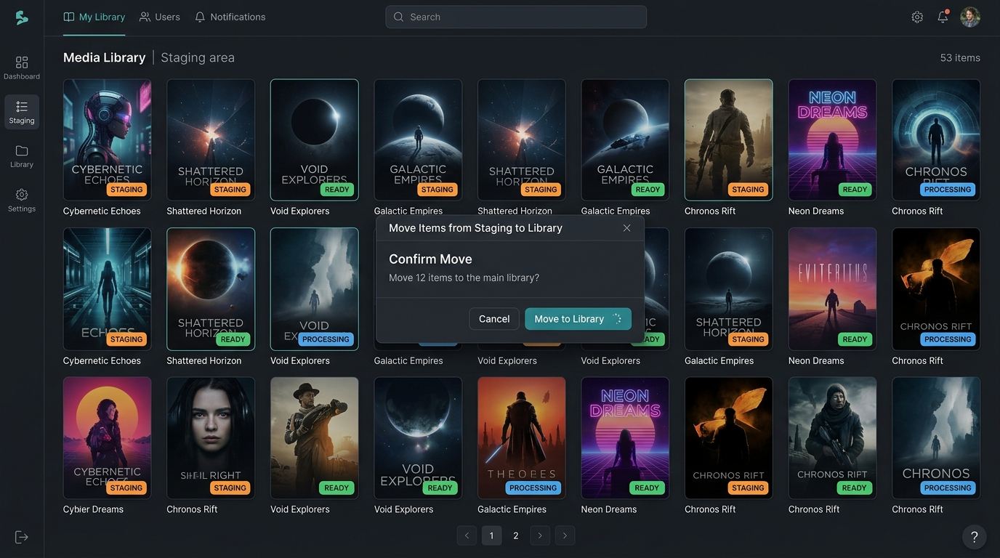
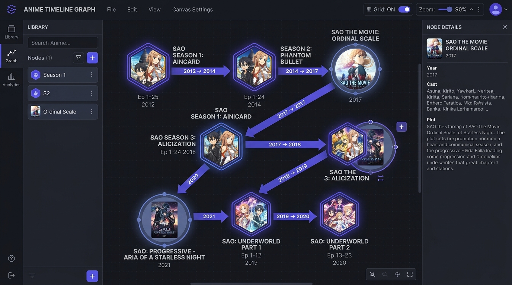
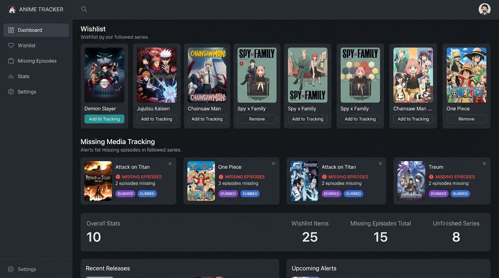

01. Folder Intake & Scanning
Discover incoming file hierarchies and verify file structures with speed and absolute disk isolation.
Workflow Steps
- Set Staging Directory: Designate your incoming media downloading or processing drive path in global settings.
- Automatic Video Probing: The application spawns recursive directory scanning tasks, reading video containers (MKV, MP4, AVI, etc.) and checking files for video codec/audio channel statistics.
- State Classification: Unorganized entries are cataloged as Phase 0
RAWdirectory listings, registered in the local sqlite system, and rendered in the main staging cards tree.
Waifu Squad Optimization (Mika): Scans use differential checking. Files with cached matching modified times are skipped, preventing costly disk re-scans on boot.
02. The 3-Pane Organize Engine
Map messy download filenames into organized, structured season folders in a unified tactical layout.

Workflow Steps
- Source Files Pane (Left): Browse raw files discovered in staging. Multi-select items using checkboxes. Selection indices and selection totals update in the footer.
- Keypad Center Panel (Middle): Click numeric keys to assign the selected files to a target season (e.g. S01, S02), OVA/Special season (S00), or Extras folder. Supports quick-clearing and inline unlinking shortcuts.
- Organized Target Pane (Right): Preview the directories to be created. Interleaved ghost placeholders display missing slot numbers to warn you of skipped files.
- Execution Output: Click
Execute Plan. The filesystem worker performs safe moves, placing media into structured folders, and updates the DB entries to Phase 1STAGED.
Safety Lock: No operations are destructive. All renaming and directory moves take place inside the staging area. Your main library paths remain completely untouched until Phase 3.
03. Metadata Lookup & Provider Linking
Wire up your media folders to popular databases, downloading posters and mapping external identifiers.

Workflow Steps
- Trigger Metadata Scan: Right-click a staging card or click the search badge to open the database lookup interface.
- Choose Provider Engine: Query TMDB, TVDB, MyAnimeList, or AniList metadata. Confidence ratings are calculated based on year offsets, naming matches, and episode count discrepancies.
- Execute Linking: Connect the series ID. This triggers the background worker to populate series data and write local NFO and poster assets to the directory, advancing the folder state to Phase 2
GREEN.
Unlinked Mode: If a custom series doesn't exist on online databases, you can keep it as an unlinked STAGED item. It will still move cleanly to libraries in Phase 3.
04. Watch Order Weaver (Canvas Graph Editor)
Visually link TV series, OVA specials, movies, and spin-offs into a single chronological timeline.

Workflow Steps
- Open Timeline Weaver: Navigate to the node-based canvas view. The sidebar displays available seasons, chunks, and movies inside your current staging/library structures.
- Create Timeline Nodes: Drag anime series segments, movies, or specials onto the canvas workspace. Connect node outputs to downstream inputs using click-and-drag handle connections.
- Connect Connector Dots: For placing movies or specials chronologically between specific episodic slots, attach connection links to programmatically generated connectors on the spine.
- Compile Timeline Export: Click Save. A deep pathfinding DFS algorithm flattens the connection diagram, writing custom display season/episode offset metadata into individual NFO files or generating playlist files.
Jitter Snapping: React Flow nodes snap automatically to standard layout grids, preventing overlap. Connectors feature strict handle limits (1 for standard nodes, 2 for junctions) and route automatically on connection.
05. Wishlist & Missing Media Tracker
Track gaps in episodic releases, register dub vs sub availability, and export missing files manifests.

Workflow Steps
- Automatic Health Check: The app parses database records and compares folder counts with linked TMDB episode catalogs, auto-flagging gaps as missing episodes.
- Dubs & Tag Filtering: Organize your target wishlist based on specific release parameters (e.g. English Dubs, Japanese Subbed, BD Remuxes).
- Search & Filter Safeguards: Filter datasets instantly in real-time. Sanitization guards filter out missing database column attributes, preventing crashes.
06. Moving Staging Items to Libraries
Seamlessly transfer finished staging structures into your live server libraries without locking the UI.
Workflow Steps
- Select Items to Move: Open the Move Staging items list. Select all organized staging directories that have passed verification scans.
- Choose Library Destination: Map the staging folders to their corresponding main library paths (e.g. Anime, TV Shows, Movies) via dropdown selectors.
- Background Execution: Click Move to Library. The wizard dialog registers file copy jobs with the main persistent queue, updates SQLite mappings, and exits immediately. Operations execute in the background.
Cross-Drive Verification: If moving directories across different storage volumes, the service performs file copying, confirms byte parity sizes, and deletes the staging files on success to ensure no file loss occurs on cross-device transfers.